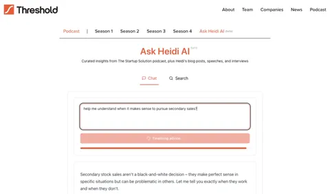
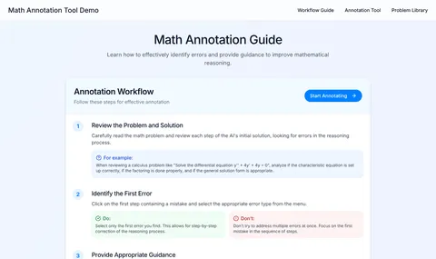
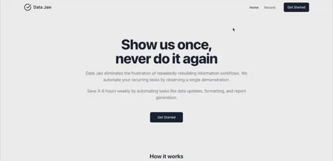
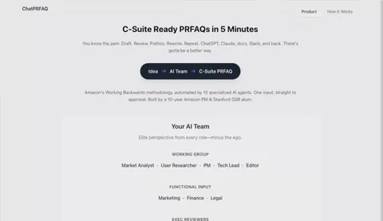

Njenga Kariuki
I lead AI transformation across Vodacom FinTech Group, including M-PESA: 100M+ customers in eight markets and $2B+ revenue. I report to the CEO and am building the AI Center of Excellence.
Before that, I spent twelve years at Amazon and AWS building AI products and businesses from zero to one, in software, hardware and mobile apps, across e-commerce, connected devices, supply chain, health and life sciences. I led cross-functional organizations of 100+ engineers, scientists and product managers, directed a $100M+ a year AI investment portfolio, and delivered machine learning, computer vision and large language model capabilities at global scale. Most recently I led product for Amazon Bio Discovery, an agentic AI application for antibody design.
I hold a master’s degree from Stanford Graduate School of Business, and my research on AI’s global economic impact was published by the Stanford Institute for Human-Centered AI in 2025.

My approach
I still work in the order my operations training taught me: define the problem, measure it, find the cause, fix it, keep it fixed.
Building an AI product
01Prove the problem before the technologyI state the customer problem without naming the technology, and test it apart from the capability before we invest.
I look for a durable customer problem, one people had before the technology and will still have after it. At Amazon’s Health Computer Vision and AI organization, every new capability had to answer such a problem. We ran customer research and capability experiments side by side, and paused further investment when either lacked proof.
- Amazon Health AI The products that shipped moved clinic measures onto the phone: body fat, waist-to-hip ratio, and mobility, stability and posture.
- Alexa Map View Phone room scanning already existed; I restated the problem as whether a customer could easily map a home.
02Own the reference, starting from the claimI decide what each model is trained and checked against, starting from the claim customers will read.
The reference decides what accurate means to a customer, so the one product leader accountable chooses it. A claim measured against a clinical instrument needs that instrument’s readings to learn from. When the labels are noisier than the claim allows, I change where the labels come from.
- Halo Body Training labels moved from fitness experts’ ratings by eye to clinical X-ray (DXA) scans.
- Halo Movement The target was the score a movement expert would give, later checked against motion capture and clinical tests.
03Measure perceived utility and build around itI measure how accurate and useful a result feels to the customer, apart from how the model scores.
A model’s accuracy on benchmarks and the accuracy a customer perceives are separate measures. So I ask customers directly whether a result feels accurate, means something to them and leads them to act. Then I change the model and the interface together, and measure again.
- Halo Tone Raw chart positions, first shown with two presidents’ voices, were replaced by daily bars and words such as “Hopeful.”
- Halo Movement The top of the 0 to 100 scale became a product decision: very athletic people rarely scored above 90.
- Amazon Bio Discovery Checkpoints measured the interface and how useful scientists found it, beyond the models’ scores.
04Keep customer and model metrics in harmonyI run one customer measure for the whole system above model metrics that scientists can improve step by step, and keep the two aligned.
The customer measure sets the target for each component, because a customer experiences the whole system. Three components that are each 90% accurate leave about one user in four with a problem. Fast rounds of customer feedback keep the two measures moving together.
- Alexa Shopping Success on each shopping request, judged against my written scoring guide, became the top measure above model metrics.
- Alexa Map View We worked on ease and map accuracy in the same rounds, and the scan went one room at a time.
05Measure perceived value at 2 and 4 weeksNovelty lifts a first rating, so I measure perceived value again weeks after first use.
In my essay of June 2024, I recommended a 4-week test, because engagement starts to drop by week 2. My preferred measure is the Sean Ellis test: how disappointed people would be if they could no longer use the product. Between model versions, small groups of people new to the product react to each change, so their comments shape the next version.
- Amazon Halo We measured the value Halo members saw at first use and again at about 2 and 4 weeks.
- Halo Movement Improvement after 2 weeks of exercises became the outcome measure, matching the program’s reassessment point.
06Be first-hand on annotation and labelingI work on annotation and labeling myself, because a rising score cannot show me what changed for the customer.
Labeling shows me how a model improved, which improvement it was and how it ties to what customers notice. The scoring guide that others will label by comes from real interactions I have judged myself.
- Alexa Shopping I listened to 1,000 requests a week and judged each request and reply as success or failure.
- Halo Tone I defined what listener panels rated, from happy to sad and low to high energy; ratings became training labels.
- Prime Now I sat in the stores, asked for whatever data they had, and designed the catalog matching around it.
07Turn coarse feedback into named dimensionsI turn coarse customer feedback into named dimensions, each with a measure the team can improve.
Each dimension then enters the evaluation with its own measure, so the team can track it from one model version to the next. Some dimensions sit outside the model: in products with complex input steps, the input step is part of the quality customers perceive.
- Halo Tone Customers wanted to see how their voice varied, so that variation, dynamism, became a measured dimension.
- Halo Movement Customers wanted variety in live workout feedback, so dynamism became a measured dimension of the workouts.
- Halo Body The scan itself became a measured part of quality, and from August 2021 it worked in smaller rooms.
08Measure on real-world data, beyond lab demosI judge models on data from real use, measured against the real outcome.
What people perceive in the lab and in daily life differs sharply. A demo on curated lab data is the easy part. Most of the work is moving it into daily use, and I plan for that from the start. The warning sign is a model that beats industry benchmarks while users think the product does not work.
- Prime Now Store stock changed daily, so each store got forecasts and an automated daily upload of its inventory.
- Halo Tone I measured the whole audio path in daily wear, band to phone, against the accuracy customers perceived.
- Amazon Bio Discovery In antibody design, lab measurements of binding became the reference; models’ confidence scores showed little correlation with them.
09Codify the measure-and-improve loop for othersI write down how we measure and improve, as scoring guides, procedures and standards, so others can run it without me.
The core team first agrees on what counts as an error, and writes an example set for each one. Any ambiguity in the core team grows once a labeling team applies the rules. Written rules let labelers agree with each other, and let other teams run the same measures.
- Alexa Shopping My error definitions, each with example cases, became the procedures that a team of 10 data analysts applied.
- Amazon Health AI Body fat, mobility and waist-to-hip ratio were each tested against a named clinical reference in a published study.
- M-PESA Africa A written standard for AI in work that moves money: every check still runs.
Leading the organization that builds it
10Lead at two levels: the strategy and the workI set the strategy with the CEO and executive team, and go hands-on in the work itself, in the forward-deployed engineer’s role.
A working prototype on a team’s own work shows what the technology can do. So I build the first version with the people who will run it. The executive work decides which chains of work change; the hands-on work shows how they can.
- M-PESA Africa I set the direction reporting to the CEO, and build the first versions with the teams that redesign each chain of work.
- Prime Now I learned to code to automate the stores’ uploads myself, before the system ran for every store.
- Alexa Shopping I listened to 1,000 shopping requests a week while leading the evaluation team.
11Change how the team itself worksI change how my own organization works in short cycles, and keep only the changes that hold up.
In Amazon’s health AI teams, a product manager, a designer and a group of engineers spent each Friday on one charter: “build something that won’t work.” At AWS, I made the product organization itself AI-native, from how we defined products to how we built them.
- Amazon Health AI Ideas from the Friday builds still had to pass two proofs before more money.
- Amazon Bio Discovery Alongside the product, the organization moved to AI-native ways of defining and building products.
12Change what teams and people are measured onPeople work toward what they are measured and promoted on, so I change the measures first.
At Prime Now, each new country was measured on revenue, a goal that did not reward growing two-hour delivery. I proposed measuring each country on its percentage growth instead, and leadership adopted it.
- Prime Now Each country’s goal moved from revenue to percentage growth.
- M-PESA Africa Each changed workflow is measured end to end, against a comparison group working the old way.
13Measure the whole time the customer waitsI measure the whole time a customer waits, because AI that speeds up one step changes little while the handoffs around it stay the same.
If AI halves a two-day step in a 10-day process, the customer waits nine days instead of 10. The other eight days are handoffs, approvals and waiting. So I measure from the first request to the result, and change the steps around the AI along with the step it speeds up.
- M-PESA Africa Where the time goes in one workflow: halving the waiting saves more than halving the work.
- Amazon Bio Discovery Bench scientists had waited for computational biologists to run models; Bio Discovery put both in one application.
| Principle | M-PESA Africa | Bio Discovery | Map View | Health AI | Halo Movement | Halo Tone | Halo Body | Amazon Halo | Alexa Shopping | Prime Now | Works |
|---|---|---|---|---|---|---|---|---|---|---|---|
| 01 Prove the problem before the technology | 2 | ||||||||||
| 02 Own the reference, starting from the claim | 2 | ||||||||||
| 03 Measure perceived utility and build around it | 3 | ||||||||||
| 04 Keep customer and model metrics in harmony | 2 | ||||||||||
| 05 Measure perceived value at 2 and 4 weeks | 2 | ||||||||||
| 06 Be first-hand on annotation and labeling | 3 | ||||||||||
| 07 Turn coarse feedback into named dimensions | 3 | ||||||||||
| 08 Measure on real-world data, beyond lab demos | 3 | ||||||||||
| 09 Codify the measure-and-improve loop for others | 3 | ||||||||||
| 10 Lead at two levels: the strategy and the work | 3 | ||||||||||
| 11 Change how the team itself works | 2 | ||||||||||
| 12 Change what teams and people are measured on | 2 | ||||||||||
| 13 Measure the whole time the customer waits | 2 |
Each dot is a principle at work in a product. Choose one to read how.
01Prove the problem before the technology
02Own the reference, starting from the claim
03Measure perceived utility and build around it
04Keep customer and model metrics in harmony
05Measure perceived value at 2 and 4 weeks
06Be first-hand on annotation and labeling
07Turn coarse feedback into named dimensions
08Measure on real-world data, beyond lab demos
09Codify the measure-and-improve loop for others
10Lead at two levels: the strategy and the work
11Change how the team itself works
12Change what teams and people are measured on
13Measure the whole time the customer waits
Patents and papers
- 2022Peer-reviewed studySmartphone camera based assessment of adiposity: a validation studyA clinical test of how closely Halo Body’s phone scan measured body fat.
- 2022US 11,393,462 · PatentSystem to characterize vocal presentationTells a wearer how their voice sounded to others across a conversation, in a few descriptive words.
- 2022US 11,430,467 · PatentInteraction emotion determinationScores how the wearer sounded in each conversation and, over time, shows it for each person they talk with often.
- 2022Peer-reviewed studyValidation of Amazon Halo Movement: a smartphone camera-based assessment of movement healthA test of whether Halo Movement’s phone score for mobility, stability and posture matched clinical measures.
- 2022US 11,462,218 · PatentConserving battery while detecting for human voiceA wearable that puts its microphone to sleep between short checks for the wearer’s voice, to save battery.
- 2023US 11,632,456 · PatentCall based emotion detectionDuring a phone call, the wearable samples the wearer’s voice more often, and the phone shows how the call sounded.
- 2023Peer-reviewed studyDevelopment and validation of an accurate smartphone application for measuring waist-to-hip circumference ratioA test of how closely the Halo app measured waist-to-hip ratio, a body-shape measure linked to disease risk.
- 2023US 11,783,834 · PatentConserving battery while detecting for human voiceA later patent built on the battery patent: how the device times its checks for voice.
- 2024Essay3 Lessons for PMs Building B2C AI ProductsAn essay for product managers who build business-to-consumer AI products, drawn from Alexa shopping and Halo.
- 2025Published researchArtificial Intelligence Index Report 2025, Chapter 4: EconomyResearch from the Stanford Institute for Human-Centered Artificial Intelligence (HAI) on AI’s global economic impact: investment, jobs, company use and robot installations.
- 2026US 12,586,583 · PatentPower state control of a device performing detection of voice in audio dataA wearable that learns when its wearer’s voice tends to start, and times its low-power sleep to match.
Hands-on builds
GitHubI build AI applications myself, because a leader learns what the technology can do by using it every day, and a working prototype shows a team what AI does with its own work.
- 2025February–June 2025Ask HeidiBuilt for my mentor Heidi Roizen and published by her venture firm on its site: founders seeking its funding could ask a question and get an answer from 688 entries of her published advice, each linked to its source.Watch the walkthrough3 min

- 2025March–April 2025Math Reasoning Annotation ToolA reviewer marks the first wrong step in an AI-written math solution, names the error and guides each revision.

- 2025April–June 2025Video-to-Workflow CaptureA proof of concept that turns a narrated screen recording into an editable diagram of the workflow.Watch the walkthrough5 min

- 2025May–June 2025; rebuilt September 2026ChatPRFAQTurns a short product idea into a researched press release and frequently asked questions, the document Amazon writes before building.Watch the walkthrough5 min

- 2026February–May 2026AI Daily DigestCollects the day’s AI reading from eight kinds of source, writes a briefing linked to earlier coverage, and emails it.
Education
- 2024–2025Stanford Graduate School of BusinessMaster of Science in Management
- 2008–2012University of St. Thomas, Opus College of BusinessB.A. in Business Administration, Operations Management